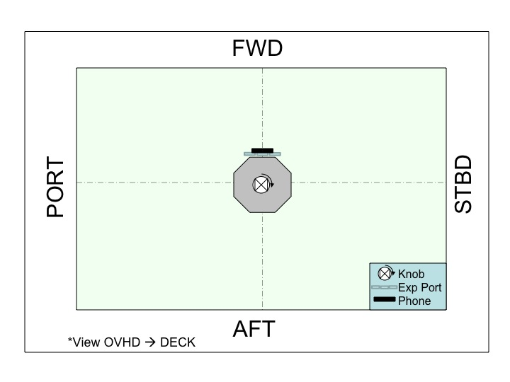

Approximate Positioning:
Please follow the table and figure below:
| Satellite | ORIENTATION | POSITION |
PRIMARY | Knob: OVHD Phone: FWD | Center of Volume |

Test Synopsis:
This test will begin with 10
seconds of initialization (free drift). After that, the ground controller will run
one of several different search patterns on the FWD wall.